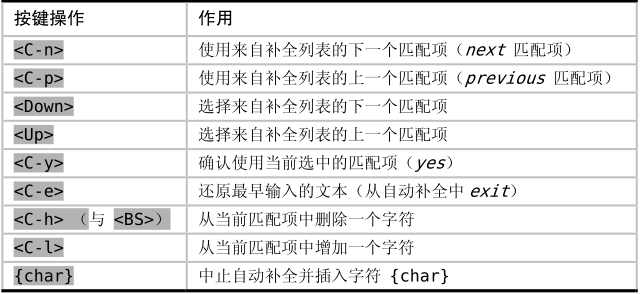

。
。技巧112与自动补全的弹出式菜单进行交互
为了能够从自动补全命令中获得最大收益，我们需要掌握其弹出式菜单的操作方法。简而言之，要么通过精简选项让我们可以快速地做出选择，要么在没有理想单词的情况下，允许我们关闭列表。
当自动补全功能被触发时，Vim会显示一份包含补全列表内容的下拉菜单。我们可以通过表19-2所列的命令与其进行交互。
有关更多细节，可以查询Vim文档:h popupmenu-completion。
不论使用哪种自动补全命令，当其弹出式菜单出现时，都可以用<C-n>与<C-p>选择菜单中的上一项或者下一项。而当我们在插入模式下使用<C-n>与<C-p>时，将会触发普通关键字自动补全。
表19-2 可供弹出式菜单使用的命令

<C-n>与<Down>这两个键都用于在弹出式菜单中选择下一项，同样地，<C-p>与<Up>都用于选择上一项。无论我们采用的是<C-p> / <C-n>还是<Up> / <Down>，请注意它们之间细微的功能性差异。
浏览补全列表，但不改变文档内容
当我们按下<Down>时，位于弹出式菜单中的下一项将被选中，但不会改变文档中的文本。因此，我们可以通过<Up>与<Down>这两个键滚动浏览位于弹出式菜单中的补全列表，直到找到理想的单词为止。然后，我们可以通过<CR>或者<C-y>将其插入到文档中。
滚动浏览补全列表的同时更新文档内容
相对于<Down>键而言，<C-n>键不仅可以选择列表中的下一项，而且它会使用选中的单词来更新文档。这意味着我们不用按<CR>就可以确认选择项，因为文档中的文本总是与弹出式菜单中的选择项保持同步。一旦从列表中选中了理想的单词，我们只要继续输入文本即可关闭弹出式菜单。
由于下列种种原因，我更倾向于使用<C-p>与<C-n>这两个组合键，而不是<Up>与<Down>。首先，当使用<C-p>与<C-n>时，我不用把手指从本位行上挪开；其次，我不必通过<CR>或者<C-y>来确认选择项，因为该项文本会自动插入到当前文档中。这也再一次印证了技巧46中的忠告，你的手指要始终放在本位行上。
放弃所有选择项
在我们调出自动补全的菜单之后，或许又想再把它关掉。举个例子，如果补全列表包含了太多的补全建议，那么手动输入整个单词可能会更快一些。这种情况下，我们可以通过<C-e>来终止这次自动补全，其效果是下拉菜单将被清除，并恢复光标前的文本，即调用自动补全前所输入的内容。
随着输入字符的增多，补全列表将得到精简
在与自动补全弹出式菜单的交互过程中，输入<C-n><C-p>是我最喜欢的技巧之一。这其实是两个单独的命令，<C-n>之后紧接着<C-p>（用<C-p><C-n>也异曲同工）。前一个命令将触发自动补全功能，调出弹出式菜单，并选中补全列表中的第一项。第二条命令则选中补全列表的前一项，即在不关闭弹出式菜单的情况下回到我们所输入的文本中。现在，我们可以继续输入文本，而Vim将实时过滤补全列表。
如果补全列表中包含了太多补全建议，让我们一眼望去无从下手，用这种方式将很管用。假设补全列表包含20项补全建议，而我们只输入了单词的前两个字符。当我们输入第3个字符时，补全列表会立即得到精简。我们可以继续按照这种方式输入单词，直到补全列表短到足以令我们方便地选择理想的单词为止。
该技巧对于其他自动补全功能也同样有效。例如，我们可以通过<C-x><C-o><C-p>对全能补全的结果进行实时性过滤，或者利用<C-x><C-f><C-p>为文件名补全实现相同的功能。